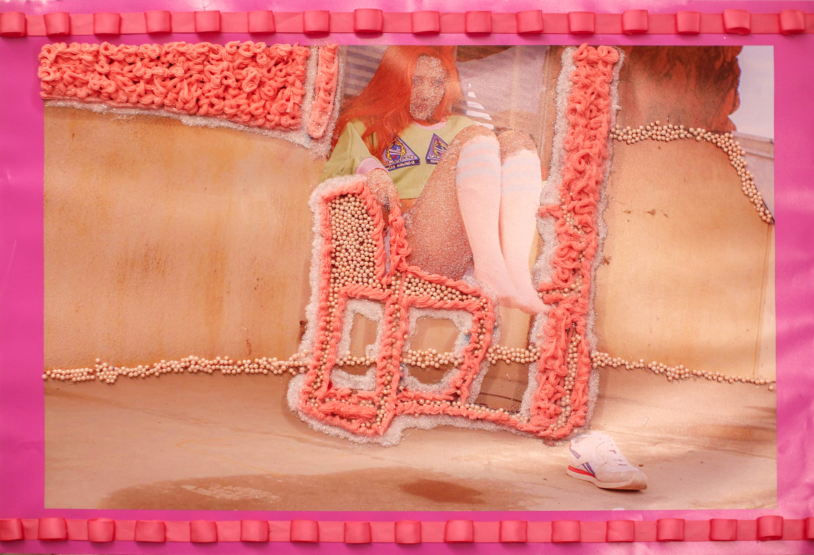
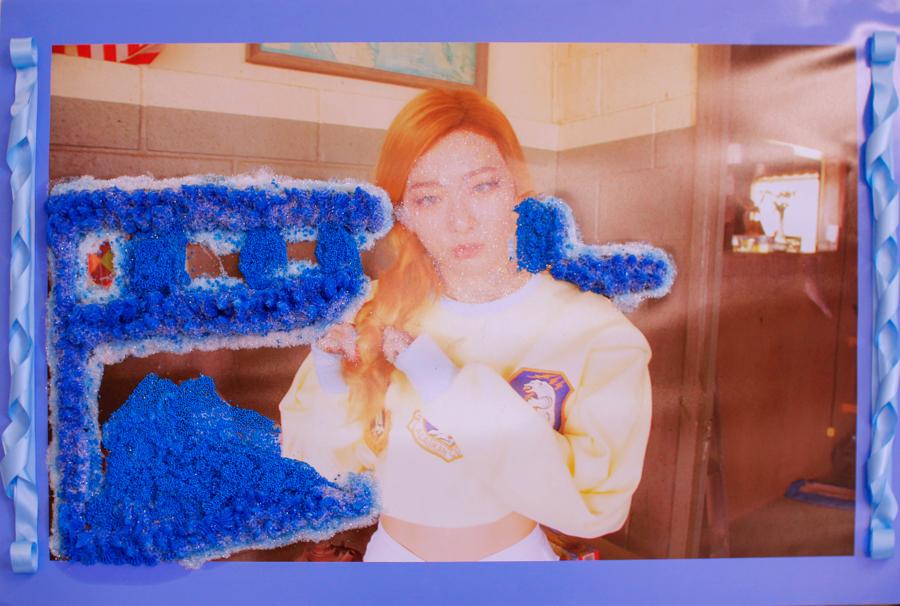
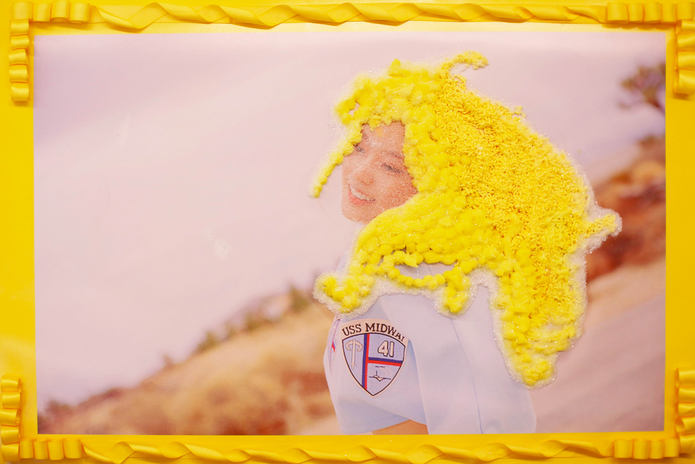
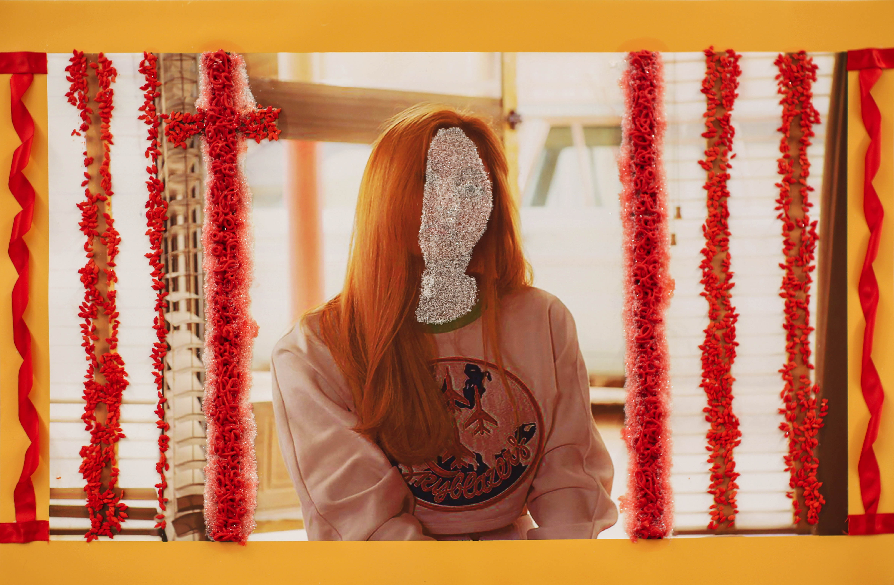
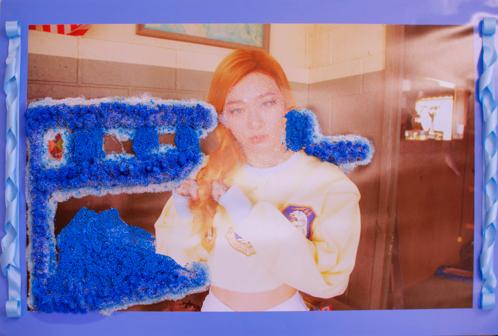
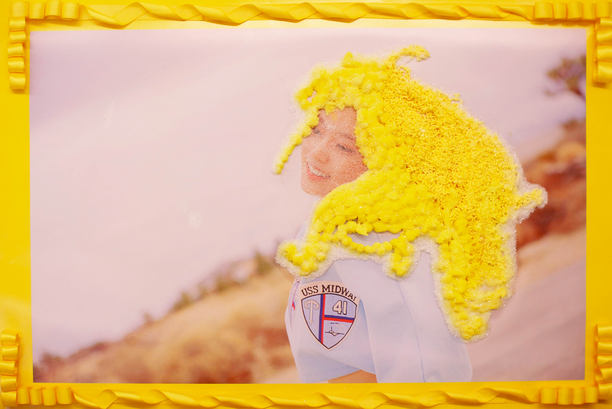
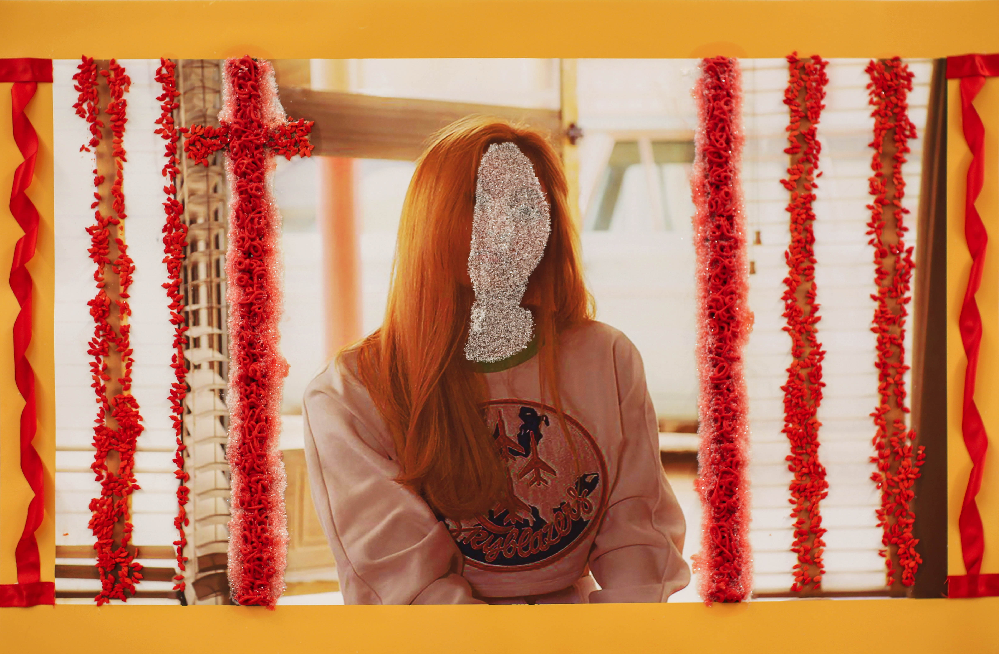

REFLECTION OF SIGHT

 





This project was an exploration and a critque of the genre, Korea Pop (K-Pop). The company, SM Entertainment has established itself as one of the leading companies within the K-Pop Industry, having contracted and trained groups such as SHINee, Girl’s Generation, and EXO, which are now recognized on a global scale. Commonly, before a group debuts/comebacks there is higher prioritization placed on the aesthetics of the group. Rather, than on the actual sound being produced, which is emphasized through the elevated production value of teasers, performances, music videos, and the “look” of the performers themselves. In my investigation, I specifically anaylized the aesthetics, marketing, and production of the K-Pop group, Red Velvet.